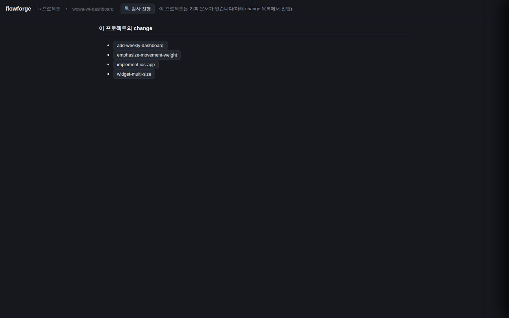
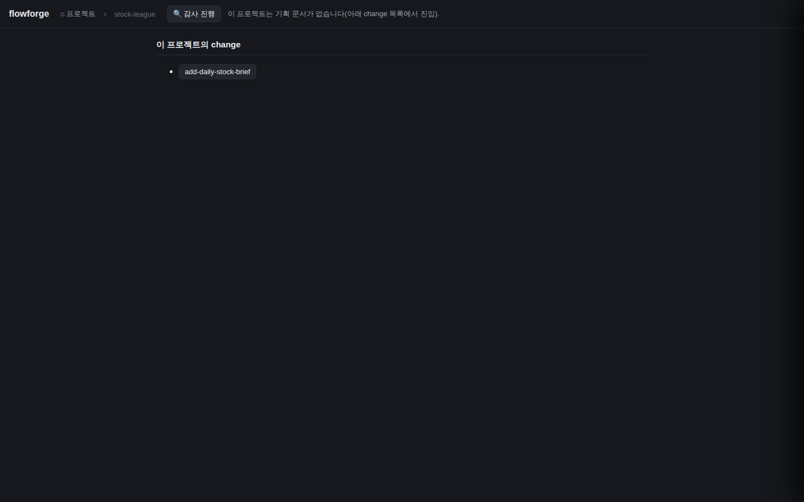
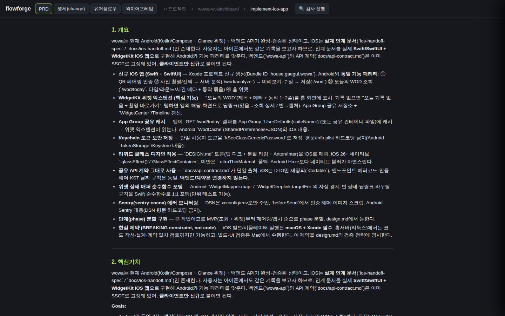
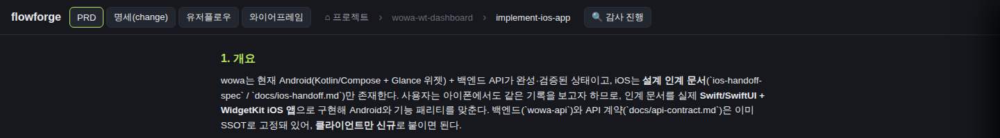
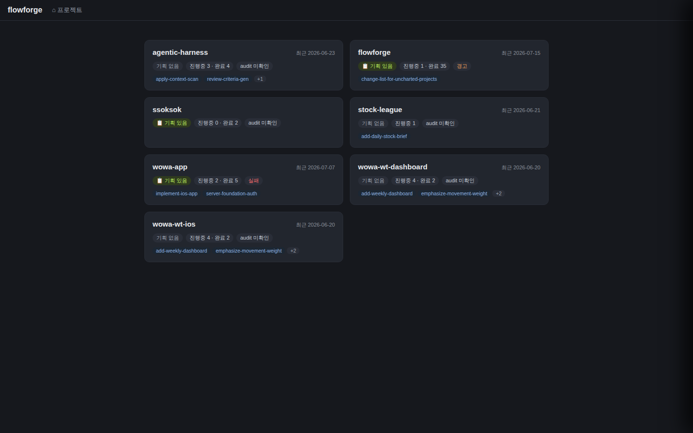

검증일: 2026-07-15T03:35:00+09:00 · 환경: server(jest 548)·web(vitest 16) 실행. UI=Playwright chromium 헤드리스로 라이브(flowforge.gaegul.house, docker compose up -d --build 재배포분) 실픽셀 관찰. android/ios=해당 없음(웹 대시보드). · run: run-20260715-0335 · commit 3784e42d (dirty)
PASS 5 · FAIL 0 · 검증 안 함 0 · SKIPPED 0
| Requirement | Scenario | Layer | 검증 수단 | 탐지 근거(basis) | 결과 | 증거 |
|---|---|---|---|---|---|---|
| 기획 없는 프로젝트의 change 목록 노출 | 활성 change가 있는 기획-없는 프로젝트: hasCharter=false이고 activeChangeNames가 1개 이상인 프로젝트 카드를 열면 활성 change 각각이 클릭 가능한 목록 항목으로 렌더된다 | web | 라이브 flowforge.gaegul.house에서 Playwright로 wowa-wt-dashboard(활성 change 4개) 카드 클릭 → skeleton 단계 innerText에서 4개 change 이름 전수 확인 | web 레이어 감지: web/src/UnchartedChangeList.tsx + App.tsx 배선, 라이브 배포 확인 | ✓ PASS |  |
| 기획 없는 프로젝트의 change 목록 노출 | 활성 change가 없는 기획-없는 프로젝트: change 목록을 억지로 만들지 않고 활성 change가 없음을 정직하게 표기한다(존재하지 않는 링크 미생성) | web | server 단위테스트로 allActiveChangeNames=[] 반환 확인 + UnchartedChangeList의 changeNames.length===0 분기가 '활성 change 없음' 렌더 | server/src/lib/__tests__/projects.test.ts 신규 케이스 + web/src/UnchartedChangeList.tsx:19-24 | ✓ PASS |  |
| change 클릭 시 5종 문서 뷰 진입 | change 항목 클릭 → views 진입: 대시보드가 views 단계로 전환되고 그 change의 문서 뷰(기본 PRD 탭)가 열린다 | web | 라이브에서 Playwright로 wowa-wt-dashboard의 3번째 change(implement-ios-app, slice 절단으로 이전엔 도달 불가였던 것) 클릭 → 브라우저 실요청 status + PRD 본문 렌더 관찰 | web 레이어 감지: App.tsx openChangeViews 배선, 라이브 배포 확인 | ✓ PASS |  |
| change 클릭 시 5종 문서 뷰 진입 | 딥링크 project는 영문 키로 실린다: 딥링크의 project 파라미터는 프로젝트 영문 식별자(name)이며 한글 표시명이 아니고, 빈 값·플레이스홀더를 남기지 않는다 | web | 라이브 클릭 후 실제 브라우저 URL 관찰 | web/src/deeplink.ts serializeDeepLink(encodeURIComponent) + App.tsx openChangeViews | ✓ PASS |  |
| 기획 있는 프로젝트 회귀 없음 | 기획 있는 프로젝트는 기존대로: hasCharter=true 프로젝트(flowforge)의 기존 planning 탭이 그대로 렌더되고 새 change 목록 섹션은 나타나지 않으며, 기능명세 노드 경유 기존 change 진입이 정상 동작한다 | web | web vitest 회귀 가드 테스트(hasCharter=true → 목록 미렌더) + 무력화 프로브 + server 548 전체 무회귀 | web/src/__tests__/uncharted-change-list.test.tsx 회귀 describe 블록 | ✓ PASS |  |
| Requirement | null | 빈값 | 잘못된타입 | 경계값 | 에러경로 | 동시성 | 대량 | 특수문자 | 판정 |
|---|---|---|---|---|---|---|---|---|---|
| 기획 없는 프로젝트의 change 목록 노출 | ✓ | ✓ | N/A | ✓ | N/A | N/A | ✓ | N/A | ✓ 충분 |
| change 클릭 시 5종 문서 뷰 진입 | ✓ | ✓ | N/A | ✓ | ✓ | N/A | ✓ | ✓ | ✓ 충분 |
| 기획 있는 프로젝트 회귀 없음 | ✓ | ✓ | N/A | ✓ | N/A | N/A | N/A | N/A | ✓ 충분 |
✓=covered · N/A=해당없음(사유 hover) · ✗=missing. happy-path만이면 검증 불충분 → 최종 FAIL 차단.
| Layer | 상태 | ran | passed | failed | 근거/사유 |
|---|---|---|---|---|---|
| server | ✓ PASS | 548 | 548 | 0 | server 워크스페이스 감지(jest, npm test --workspace=server). allActiveChangeNames 신규 3케이스 포함. |
| web | ✓ PASS | 16 | 16 | 0 | web 워크스페이스 감지(vitest) + 라이브 Playwright 실픽셀 관찰(flowforge.gaegul.house 재배포분). |
| android | – SKIPPED | 0 | 0 | 0 | 해당 없음 — flowforge는 웹 대시보드. android 산출물 없음. |
| ios | – SKIPPED | 0 | 0 | 0 | 해당 없음 — flowforge는 웹 대시보드. ios 산출물 없음. |
✓ PASS 통과
archiveGate.open = true (PASS일 때만 true). verify.json이 이 값을 archive 게이트에 전달.
{kind=link}
{kind=link}
{kind=link}
{kind=link}
{kind=link}